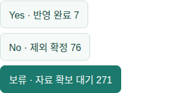

2026-11-05 · 사용자가 위임한 업무를 판단과 실제 저장까지 수행하는 경로 검증
Yes: 검증된 사업 등록·자료 연결·정책 귀속·단계 실적을 실제 저장. No: 비주택·비사업자료임을 확인하고 제외와 근거 저장. 보류: 필요한 자료·출처·재판단 조건을 기록하고 새 근거 또는 재조사 시점에 다시 검토.
과거 보류·등록 대기는 재판단한다. 동시 변경·불일치 실적은 덮어쓰지 않는다. 모든 요청 조치는 하나의 트랜잭션으로 집행하며 실패 시 되돌린다. 사용자 위임 AI 처리이며 실제 기관 담당자 확인 또는 전문기관 인증이 아니다.
아래 모든 시도와 중단 이력을 함께 보존한다. 각 실행은 제한된 검증 분량이며 전체 미연결 업무 완료를 뜻하지 않는다. 계획자료 연결은 호수 증가와 별개다.
| 실행 ID | 모델 | 종료 | 최종 결론 | 모델 호출 | 확인 토큰 |
|---|---|---|---|---|---|
| bca4078e-11d0-4456-9bfa-ff2545511f97 | solar-pro4 | PARTIAL | {'HOLD': 1, 'YES': 1} | 3 | 10658 |
| 4a67c892-634f-42de-9dbc-e787af6b27fa | gpt-5.4 | COMPLETED | {'NO': 2, 'YES': 1} | 6 | 18140 |
| df4684a0-bf87-4583-97ea-dfb3b8f278e6 | gpt-5.4 | PARTIAL | {'HOLD': 3} | 6 | 16481 |
| 317eb288-0013-4c8b-bd25-fdb40024f959 | gpt-5.4 | PARTIAL | {'HOLD': 8} | 10 | 51945 |
| 36512e4a-9760-4294-830d-17b38635a4ae | solar-pro4 | CANCELLED | {'HOLD': 12} | 11 | 48377 |
업무 상태: {'REGISTRATION_REQUIRED': 46, 'APPROVED': 17, 'EXCLUDED': 134, 'REVIEW': 3, 'HOLD': 76} → {'REGISTRATION_REQUIRED': 30, 'APPROVED': 17, 'REVIEW': 3, 'EXCLUDED': 136, 'HOLD': 93}
사업·정책·목표·실적 판본 보존: True / 정책 연결 원장 보존: True
| 자료 | 상태 | 최종 사유 |
|---|---|---|
| DOC_63aa5d0ed29ad8e77b39764d | REVIEW → EXCLUDED | 원문은 용인세브란스병원 암센터 건립 착공식과 의료·교육·연구시설 조성에 관한 기사로, 주택공급 사업 자료가 아니다. |
| DOC_734a618c7ff3c2ec53a62f89 | REVIEW → HOLD | 본 자료는 인천의 국민평형(전용 84㎡) 평균 분양가 8억원 돌파, 59㎡·㎡당 분양가 최고치 경신, 신규 단지(산곡역자이힐스테이트앤하늘채·청라 아크원 푸르지오·계양신도시 카이브 유보라) 사례, 10월 인천 일반분양 3267가구 등 시장·통계 분석 기사다. 특정 단일 주택공급 사업(위치·블록·전체 계획 물량·인허가/분양 일정)을 공식 근거로 확보할 수 없어 업무 결정 기준에 해당하지 않는다. 제시된 단지명은 분양가 예시로 인용되었을 뿐, 각 사업의 주소·사업번호·전체 목표물량은 원문에 없으며, 일부는 ‘계양구 계양신도시 카이브 유보라 AC3·AC4블록’처럼 블록만 표기되어 사업 단위 식별이 불완전하다. 따라서 기존 project_ids 연결이나 new_projects 등록으로 이어지지 않는다. 정책 귀속은 광역 지구명·정책 시행 이후라는 이유만으로 연결할 수 없고, 개별 사업 귀속을 직접 명시한 근거가 없어 policy_links도 작성하지 않는다. market 통계성 자료이므로 실제 실적이 없다는 이유만으로 NO/HOLD로 처리하지 않으며, 향후 사업 단위 공식 공고·승인 문서를 확보하면 재판단한다. |
| DOC_8d4ee1209854e790f765ca93 | REVIEW → EXCLUDED | 재계약 대상자의 입주자격 심사서류 제출을 알리는 행정 안내로, 개별 주택공급사업의 식별 정보나 사업 단계 자료가 아니다. |
| DOC_28c9b02a51a12b5d94a48e8b | REGISTRATION_REQUIRED → HOLD | 신규 사업명과 구체 주소가 결합된 공식 인용 필요 |
| DOC_f8e418dd1c6c6d46a0e25af0 | REGISTRATION_REQUIRED → HOLD | 완전한 본문 미확보 · 첨부·원문 수동 확인 필요 · 신규 자료 검토에서 원문·식별정보 보완 후 재검토 |
| DOC_2fc8e5ba041834cb45112031 | REGISTRATION_REQUIRED → HOLD | 공식 공고 원문(i-sh)을 근거로 봅니다. 근거는 DOC_2fc8e5ba041834cb45112031(모집공고일·공급호수·신청자격·접수기간·당첨발표·문의처)입니다. 사업명은 '노원구 도전숙(수요자맞춤형) 잔여세대 입주자 모집'이고, 공고문에 사업명이나 구체 주소가 명시되지 않아 사업 식별이 공고명/문의처 수준에서만 가능합니다. 따라서 신규 project_ids 등록이나 new_projects 등록까지는 현재 원문만으로 확정하지 않았습니다. 정책 귀속은 공식 자료에 개별 사업과의 직접 연결이 없으므로 policy_links는 붙이지 않았습니다. 이 공고는 수요자맞춤형(공유형) 임대주택의 잔여세대 모집으로 비주택/행정홍보가 아니며, 실적 미확인은 이 건 판단의 NO 사유가 아닙니다. 결론: NORPHO_TOT_YES_HOUSEWORTH_PLAN_WITHOUT_PROJECT_ID. 간단히 정리하면 '노원구 도전숙이 주택공급 사업 공고임은 인정하나, 사업명·주소·사업번호 미특정으로 이번 원문만으로는 기존 project_ids 연결 또는 new_projects 등록까지 하지 않고, 후속에서 공고문 3페이지 등 세부사업 정보로 재판단하는 HOLD 성격'입니다. (상세: |
| DOC_62b5e068d783c9a64e8a4bfa | REGISTRATION_REQUIRED → HOLD | 최종 판단을 뒷받침하는 정확한 원문 인용 필요 |
| DOC_87cca7787d542e5eb6512549 | APPROVED → APPROVED | LH 공식 보도자료에서 시흥거모 공공주택지구 S-1블록 공공분양 300호 입주자모집공고가 명시돼 기존 사업 후보(PRO_5fd2115e976e1d5bb4e90456, 시흥거모 S1)와 동일 사업으로 식별·연결된다. 일정·타입·분양가 안내 위주 자료로 실제 실적 사건은 추가하지 않는다. |
| DOC_399cef64b0964d47871bb820 | REGISTRATION_REQUIRED → HOLD | 현장점검 보도자료로 구 공항고(강서구 방화동) 부지를 「학교용지 복합개발 특별법」 등 제도 활용을 통해 공공주택 270호·다목적 체육시설로 조성하는 사업 현황을 점검한 사실이 확인된다. 8·13 대책(도심 내 가용부지) 관련 사업 후보로 검토되며, 기존 원장과 대조해 사업 등록/연결을 진행한다. 다만 현재 원문에는 법정 지구·구역·블록·시행자·지구 지정 근거, 실제 착공/입주/공급 실적, 그리고 추가 정책/사업 귀속이 직접 명시되어 있지 않으므로, 확정 정보로 만드는 값은 만들지 않고 후보 검토 상태로 둔다. 보도자료 자체가 사업 자료로 유효하므로 NO나 실적 부재만으로 보류하지 않으며, 후속 공식 공고/고시/실적 확인이 있으면 project 등록·policy_links 확장·stage_events 기록을 반영한다. |
| DOC_4ffc89d2df92899aa341db4d | REGISTRATION_REQUIRED → HOLD | 제공된 증거 목록 밖의 원문 ID |
| DOC_7a1ec6af9f12b62cd9a679c8 | REGISTRATION_REQUIRED → HOLD | 최종 판단을 뒷받침하는 정확한 원문 인용 필요 |
| DOC_c45f9c890c1f952db73a95a6 | REGISTRATION_REQUIRED → HOLD | 제공된 증거 목록 밖의 원문 ID |
| DOC_376dd572e71726ae28982ea4 | REGISTRATION_REQUIRED → HOLD | 최종 판단을 뒷받침하는 정확한 원문 인용 필요 |
| DOC_a15ac1688f0ad3ac70c3f17f | REGISTRATION_REQUIRED → HOLD | 신규 사업 주소의 시도 구분 확인 필요 |
| DOC_dc15b5e37f06ac93bec858d7 | REGISTRATION_REQUIRED → HOLD | 최종 판단을 뒷받침하는 정확한 원문 인용 필요 |
| DOC_4b3de908d0e01bae0c7b984b | REGISTRATION_REQUIRED → HOLD | 완전한 본문 미확보 · 첨부·원문 수동 확인 필요 · 신규 자료 검토에서 원문·식별정보 보완 후 재검토 |
| DOC_2e43ecfb6fe69f45bf6dc69f | REGISTRATION_REQUIRED → HOLD | 상은 SH 공문 출처의 공식 입주안내이며 사업명(마곡이음스테이 도전숙)과 입주기간 등 프로젝트 데이터가 있어 이전 보류와 달리 업무 대상으로 잡아 YES 처리를 시도한다. 다만 원문에 대상단지명만 있고 신규 사업 등록·식별에 필요한 구체 주소·블록·사업번호·전체 사업량 등이 없어 정식 등록 조건을 채우지 못한다. 또한 기존 project_ids 식별자도 확인되지 않아 기존·신규 연결 모두 미완료 상태이므로, 실질 처리 가능 판정은 자료 보강 시점으로 미루고 HOLD로 둔다. |
| DOC_80cc5ac55e3dc29c0f4463f5 | REGISTRATION_REQUIRED → HOLD | 공식 공고로 주택사업 관련 입주 안내임은 확인되나, 기존 사업 연결 또는 신규 등록에 필요한 구체 주소·사업 식별정보가 원문에 없다. 사업명만으로는 동일·중복 여부를 확정할 수 없어 보류한다. |
| DOC_35b92d963a3f27fda9ef07a6 | REGISTRATION_REQUIRED → HOLD | 입주 안내문으로 주택사업 자료임은 확인되지만, 이 문서만으로는 기존 사업과 동일성 판단에 필요한 구체 주소·사업번호·블록 식별자가 없어 project 연결 또는 신규 등록을 확정할 수 없습니다. |
| DOC_2d1a68559b0ca58fdb516a4b | REGISTRATION_REQUIRED → HOLD | 입주안내문으로 실제 주택 자료임은 확인되지만, 사업 식별에 필요한 구체 주소·사업번호·기존 사업 연결 근거가 본문에 없어 신규 등록이나 기존 사업 연결을 확정할 수 없습니다. |
회귀 테스트 126개 통과. 실서버 서비스 응답, PC 1440px·모바일 390px, 세 탭·보류 근거·CSV 확인. 신규 자료 검토 → AI 자료 수집 자동화 → 업무담당자에서 확인한다. 기본 Solar 설정과 01~05시 예약·PoC7/10/11 공통 한도는 유지했다. GPT 비교 실행은 실행별 설정만 사용했다.
DB 변경 및 실행 증빙 · 전체 Yes·No·보류 CSV · 브라우저 검증 · API·CSV 검증 · 서비스 응답
